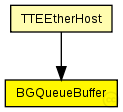

This documentation is released under the Creative Commons license
This documentation is released under the Creative Commons licenseRepresents a queue buffer for background traffic. Messages are sent immediatly to LLC
The buffer stores infinit messages in a fifo queue. The buffer removes and sends the first message in the queue.
Author: Till Steinbach
The following diagram shows usage relationships between types. Unresolved types are missing from the diagram.
The following diagram shows inheritance relationships for this type. Unresolved types are missing from the diagram.

| Name | Type | Description |
|---|---|---|
| BGBuffer | simple module |
Represents an abstract Buffer for background traffic. Messages are sent immediatly to the LLC |
| Name | Type | Description |
|---|---|---|
| TTEEtherHost | compound module |
Module for a TTEthernet Host. Contains a EtherLLC for best-effort traffic, a TTEPHYPort module as physical port, sync module (Sync) and a TTEScheduler module. The Host is configured by the provided TTEthernet XML network configuration (network_configuration parameter) and uses the device_name parameter to find its config. The configuration is done by the BufferManager that deletes itself at runtime. |
| Name | Type | Default value | Description |
|---|---|---|---|
| priority | int | -1 |
Priority of the buffer (currently only used for rate-constrained traffic) |
| ct_id | int | 0 |
Critical traffic ID of the buffer |
| ct_marker | int | 0 |
Critical traffic marker of the buffer |
| ct_mask | int | 0 |
Critical traffic mask of the buffer |
| destination_gates | string | "" |
Comma seperated list of gates where the frames of the buffer are delivered |
| Name | Value | Description |
|---|---|---|
| display | i=block/buffer | |
| class | BGQueueBuffer |
BGQueueBuffer is implemented by the BGQueueBuffer C++ Class |
| Name | Direction | Size | Description |
|---|---|---|---|
| in | input |
The buffers Input |
|
| out | output |
The buffers Output WARNING: CURRENTLY NOT USED! |
| Name | Title | Source | Record | Unit | Interpolation Mode |
|---|---|---|---|---|---|
| queueLength | Queue Length | vector | sample-hold |
// // Represents a queue buffer for background traffic. Messages are sent immediatly to LLC // // The buffer stores infinit messages in a fifo queue. // The buffer removes and sends the first message in the queue. // // @see BGBuffer, Buffer, // // @author Till Steinbach simple BGQueueBuffer extends BGBuffer { //BGQueueBuffer is implemented by the BGQueueBuffer C++ Class @class(BGQueueBuffer); //Statistic of the queue length of the buffer @statistic[queueLength](title="Queue Length"; record=vector; interpolationmode=sample-hold); }
This documentation is released under the Creative Commons license